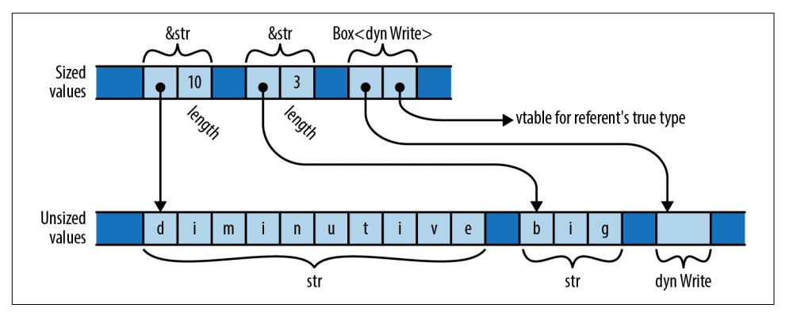

【Rust】常用 Trait
Rust 中的 Trait 可以分为三类：
-
语言扩展
Trait：主要用于运算符重载，我们可以将常用的运算符使用在自己的类型之中，只要相应的Trait即可，例如Eq，AddAssign，Dere，Drop以及From和Into等； -
标记类型
Trait：这些Trait主要用于绑定泛型类型变量，以表达无法以其他方式捕获的约束，这些包括Sized和Copy； -
剩下的主要是一些为解决常遇到的问题，例如：
Default，AsRef，AsMut，Borrow，BorrowMut，TryFrom和TryInto；
Drop
Rust 中当一个值离开作用域时就会对它的内存进行清理，但是所有权转移不会，这类似于 C++ 中的析构函数。在 Rust 中我们也可以对析构的过程进行自定义，只要实现 std::ops::Drop 即可，在值需要清理的时候会自动调用 drop 函数，不能显示调用：
1 | pub trait Drop { |
通常不需要实现 std::ops::Drop，除非定义了一个拥有 Rust 不知道的资源的类型。 例如，在 Unix 系统上，Rust 的标准库在内部使用以下类型来表示操作系统文件描述符：
1 | struct FileDesc { |
FileDesc 的 fd 字段只是程序完成时应该关闭的文件描述符的编号，c_int 是 i32 的别名。标准库为 FileDesc 实现 Drop 如下：
1 | impl Drop for FileDesc { |
这里，libc::close 是 C 库关闭函数的 Rust 名称，Rust 仅能在 unsafe 块中调用 C 函数。
如果一个类型实现了 Drop，它就不能实现 Copy，如果类型可 Copy，则意味着简单的逐字节复制足以生成该值的独立副本，但是在相同的数据上多次调用相同的 drop 方法通常是错误的。
标准库预包含的 drop 函数可以显示删除一个值：
1 | let v = vec![1, 2, 3]; |
Sized
Sized 类型表明了它的内存在编译时确定的，该类型的所有值大小相等，Rust 中几乎所有类型大小确定，u64 占 8 个字节， (f32, f32, f32) 占 12 个字节，枚举也是大小确定的，它的大小能够容纳最大的项，对于 Vec<T>，尽管它拥有一个大小可变的堆内存，但就其自身而言，包含了指向堆的指针，容量和长度，所以它也是 Sized。
所有的 Sized 类型都实现了 std::marker::Sized，这个 Trait 没有任何方法和关联的类型，我们也不需要手动实现，Rust 会为所有适用的类型自动实现，Sized 类型唯一的用途是泛型的边界。
Rust 内部也有一些 unsized 类型，它们的值大小不一，例如 str，字符串 slice，它的值大小不确定，"diminutive" 和 "big" 都是 str 类型，但是它们分别占用 10 和 3 个字节。数组 slice，[T] 也是 unsized，一个共享引用 &[u8] 可以指向任何大小的 [u8]。str 和 [T] 都表示一个变长的数据集合，大小不定。

另外一种是 dyn Trait 类型，由于 Trait 可能指向多种类型，所以它的大小是不确定的，例如：
1 | use std::io::Write; |
但是 &dyn Trait，包含指向实现 Trait 的值和一个指向拥有该值类型方法表的指针，所以它的大小是确定的，详细请看 Trait对象。
Rust 不能将 unsized 值存储到变量或者传递给参数，唯一能使用它们的方式是使用指针，例如：&str 和 Box<dyn Write>，指向 unsized 值的指针是胖指针，包含了指向值的指针和 size 信息。
因为 unsized 类型限制比较多，所以大多数泛型都是 sized 类型，而且为了方便，Rust 隐式设置泛型是 Sized。例如，如果你写了 struct S<T> {...}，Rust 会自动加上 Sized 限制 struct S<T: Sized> {...}。如果不想这样做，可以显示设置 struct S<T: ?Sized>，?Sized 表明的意思是没必要是Sized，那也就是既可以是，也可以不是。因此，如果定义了泛型 struct S<T: ?Sized> { b: Box<T> }，Rust 允许我们为 str 和 dyn Write 实现该类型，例如，S<str> 和 S<dyn Write>，b 在这里包含了一个胖指针；以及 S<i32> 和 S<String>，b 包含一个普通指针。
除了 slice 和 Trait 之外，这里还有一种 unsized 类型。结构体的最后一个字段，也只能最后一个字段，可以是 unszied，这样的结构体也就是 unsized。我们看 Rc<T> 的实现中使用到的 RcBox<T> 类型的定义（该类型未导出）：
1 |
|
我们可以将 RcBox 用于 Sized 类型，如：RcBox<String>，也可以用于 unszied 类型，例如：RcBox<dyn std::fmt::Display>，但是我们不能直接创建 RcBox<dyn std::fmt::Display>，而是先要创建一个实现了 Display 的类型，例如 RcBox<String>，然后再将 &RcBox<String> 转换成 &RcBox<dyn Display>，这个转换在传递给函数的时候还会隐式进行：
1 |
|
Clone
std::clone::Clone 用于类型副本的创建，它的定义如下：
1 | pub trait Clone: Sized { |
Clone 扩展了 Sized，这意味着实现着都必须是 Sized，clone 方法构造了一个新的副本并且返回。
clone 值成本很高，体现在时间和内存上，例如，要克隆 Vec<String>，要复制其中的每个 String，所以 Rust 不会自动进行 clone，而是需要我们显示进行方法调用。这里有个例外就是 Rc<T> 和 Arc<T>，它们只是简单地增加引用计数。
clone_from 是根据 source 覆盖自身，工作过程就是先克隆 t，然后赋值给 *self，并且将 self 原来的值丢掉。这有时候成本很高，例如 s 和 t 都是 String，但是如果 s 的 buffer 有足够的容量容纳 t，只需要将 t 中的内容逐个复制，然后调整 s 的长度，所以 clone_from 尽可能使用优化实现。
如果 Clone 实现只是将 clone 应用于类型的每个字段或元素，然后从这些克隆中构造一个新值，并且 clone_from 的默认定义足够好，那么可以使用 #[derive(Clone )] 自动实现。
Copy
赋值操作在大多数时候会将值移动并且让原来的值变成未初始化，但是，对于简单的值，赋值操作会自动生成产生一个副本。例如，People 未实现 Copy，所以会转移值的所有权，而简单整数则会赋值：
1 |
|
但是我们可以通过 std::marker::Copy 告诉 Rust我们的类型是支持 Copy 的：
1 |
|
Copy 只是一个标记，它扩展了 Clone，但没有任何方法：
1 | pub trait Copy: Clone { } |
但是因为 Copy 是一种对语言具有特殊意义的标记 trait，Rust 只允许一个类型实现 Copy，前提是它可以按字节复制。拥有任何其他资源（如堆缓冲区或操作系统句柄）的类型无法实现 Copy。
实现了 Drop 的类型也不能 Copy，Rust 认为一个类型如果需要特殊清理，那么它就需要特殊复制。
Deref、DerefMut
我们可以通过实现 std::ops::Deref 和 std::ops::DerefMut 来自定义 * 操作符的逻辑。这两个 trait 的定义如下：
1 | pub trait Deref { |
我们熟悉的 Box<T> 和 Rc<T> 就实现它们，以至于它们能变现的像内建的指针一样，例如 &Box<T> 实际上返回的是 &T。
Deref 和 DerefMut 的另一个重要功能是它们能够实现将 &Self 引用自动转换为 &Self::Target。这样，当我们使用 * 或者 . 运算符时发现类型不匹配，Rust 会为我们自动插入 deref 或者 deref_mut 调用，这在某些场景中很方便，例如：
-
如果我们有
Rc<String>的值r，并且想使用String::find，我们可以简单的调用r.find('?')而不是(*r).find('?')，这个方调用隐式借用r，&Rc<String>转换成了&String； -
我们可以使用
split_at这些属于String的方法在[str]类型上，因为String实现了Deref<Target=str>，所以我们可以从&String直接转换成&str； -
我们可以将
&Vec<T>传递给参数是&[T]的类型，因为Vec<T>实现了Deref<Target=T>；
如果有必要，Rust 可以连续应用 deref，例如我们可以将 &Rc<String> 直接转换成 &String，又可以直接转换成 &str。例如：
1 |
|
Deref 和 DerefMut 被设计用于实现智能指针类型，如 Box、Rc 和 Arc 以及 Vec<T> 和 Stirng 这种，不能仅仅为了这种隐式的自动转换而实现它。
deref 转换可能引起一些混乱，可以用来解决类型冲突，但是不能满足变量的边界。例如，下面的函数调用是可以进行的，&Selector<&str> 会转换成 &str，Rust 发现传入的是 Selector<&str>，但是要求的是 &str，同时该类型实现了 Deref<Target=str>，所以就会将函数调用重写成 show_it(s.deref())：
1 | fn show_it(thing: &str) { |
但是当我们使用泛型函数时，就会遇到问题，例如：
1 | fn show_it_generic<T: Display>(thing: T) { |
Rust 提示我们的 Selector<&str> 没有实现 Display，但我们的 &str 确实可以。实际上因为传递了一个 &Selector<&str> 类型的参数，而函数的参数类型是 &T，所以类型变量 T 必须是 Selector<&str>。 然后，Rust 检查边界 T: Display 是否满足，因为它没有应用 deref 强制来满足类型变量的边界，所以这个检查失败。
Compiling crosscompile v0.1.0 (/Users/fudenglong/WORKDIR/rust/crosscompile)
error[E0277]: `Selector<&str>` doesn't implement `std::fmt::Display`
--> src/main.rs:38:21
|
38 | show_it_generic(&s);
| --------------- ^^
| | |
| | `Selector<&str>` cannot be formatted with the default formatter
| | help: consider dereferencing here: `&*s`
| required by a bound introduced by this call
|
= help: the trait `std::fmt::Display` is not implemented for `Selector<&str>`
= note: in format strings you may be able to use `{:?}` (or {:#?} for pretty-print) instead
= note: required because of the requirements on the impl of `std::fmt::Display` for `&Selector<&str>`
所以我们可以显示地告诉编译器怎么做：
1 | show_it_generic(&s as &str) |
或者按照编译器提示：
1 | show_it_generic(&*s); |
Default
有些类型有一个相当明显的默认值，例如 Vec 或者字符串是空，数字默认是0，而 Option 默认是 None，像这样的类型都实现了 std::default::Default：
1 | pub trait Default { |
default 简单的返回了一个 Self 新值，String 的实现很直接：
1 | impl Default for String { |
所有 Rust 的集合类型 Vec，HashMap，BinaryMap 等都实现了 Default，返回新的空的集合。如果类型 T 实现 Default，则标准库会自动为 Rc<T>、Arc<T>、Box<T>、Cell<T>、RefCell<T>、Cow<T>、Mutex<T>、 和 RwLock<T> 实现 Default。
如果一个tuple的所有元素类型都实现了默认值，那么tuple也会实现，默认为一个包含每个元素默认值的tuple。
Rust 不会为结构类型隐式实现 Default，但如果一个结构的所有字段都实现 Default，您可以使用 #[derive(Default)] 自动为该结构实现 Default。
AsRef、AsMut
当一个类型实现 AsRef<T> 时，这意味着可以从中借用 &T，实现AsMut<T> 可以借用 &mut T，它们可以实现引用到引用之间的转换，不像 From 和 Into 用于值到值之间的转移，它们的定义如下：
1 | pub trait AsRef<T> |
例如，Vec[T] 实现了 AsRef<[T]>，String 实现了 AsRef<str> 和 AsRef<[u8]>，AsRef 通常用于使函数在它们接受的参数类型中更加灵活。 例如， std::fs::File::open 函数声明如下：
1 | fn open<P: AsRef<Path>>(path: P) -> Result<File> |
open 真正需要的是 &Path，表示文件系统路径的类型。但是有了这个签名，open 接受任何它可以借用 &Path 的东西——也就是说，任何实现 AsRef<Path> 的东西。这样的类型包括 String 和 str，操作系统接口字符串类型 OsString 和 OsStr，当然还有 PathBuf 和 Path；这是允许传递字符串文字以打开文件的原因：
1 | let dot_emacs = std::fs::File::open("/home/jimb/.emacs")?; |
但是字符串文字是 &str，但实现 AsRef<Path> 的类型是 str，没有 &，Rust 不会尝试 deref 强制来满足类型变量的界限，幸运的是，标准库为所有实现了 AsRef<U> 的类型 T，自动为 &T 实现了 AsRef<U>，查看这里：
1 | impl<T: ?Sized, U: ?Sized> const AsRef<U> for &T |
Borrow、BorrowMut
std::borrow::Borrow 类似于 AsRef：如果一个类型实现了 Borrow<T>，那么它的 borrow 方法有效地从它借用一个 &T。但是 Borrow 施加了更多的限制：一个类型应该实现 Borrow<T> 只有当 &T 的 hash 和它借用的值的 hash 相同时。（Rust 不强制执行这一点，它只是 Trait 的意图。）
这种区别在借用字符串时很重要，例如：String 实现 AsRef<str>、AsRef<[u8]> 和 AsRef<Path>，但这三种目标类型通常具有不同的哈希值。只有 &str 切片保证和 String 有一样 hash 值，所以 String 只实现 Borrow<str>。
Borrow 的定义如下：
1 | trait Borrow<Borrowed: ?Sized> { |
Borrow 被设计出用于解决通用hash表和其他集合类型的场景，假设，我们有个 std::collections::HashMap<String, i32>，现在想实现查找方法，这可能是我们的第一版：
1 | impl<K, V> HashMap<K, V> where K: Eq + Hash |
这个实现中，意味着你必须传入和键值完全匹配的类型。这里，K 是 String，意思是调用 get 方法必须传入一个 String，有点浪费，再来修改：
1 | impl<K, V> HashMap<K, V> where K: Eq + Hash |
这有点好了，但是如果我们传入一个长岭的字符串，我们就得这样写，先申请一段内存将我们的文本放进去，然后传入，再然后丢掉：
1 | hashtable.get(&"twenty-two".to_string()) |
更好的方法是应该能传入和我们的 key 进行比较且能hash的值，这里 &str 完全是可以的，所以，我们的最终版形成了：
1 | impl<K, V> HashMap<K, V> where K: Eq + Hash |
由于 String 实现了 Borrow<str> 和 Borrow<String>，因此这个最终版本的 get 允许您根据需要传递 &String 或 &str 作为键。并且所有标准库的关联集合类型都使用 Borrow 来决定哪些类型可以传递给它们的查找函数。
另外，标准库为所有类型实现了 impl<T> Borrow<T> for T，这确保 &K 始终允许在 HashMap<K, V> 中查找条目时可用。
为方便起见，每个 &mut T 类型也实现了 Borrow<T>，返回一个共享的像往常一样引用 &T。
From、Into
标准库中提供的 std::convert::From 和 std::convert::Into 用于不同类型值之间的转换，它们获取值的所有权并且转换成另一个类型的值，而 AsRef 用于引用到引用之间的转换。
1 | pub trait Into<T> { |
标准库自动实现了类型转换为自身的实现，例如：
1 | impl<T> const From<T> for T { |
这两个 Trait 用于两个方向之间的转换，A into B 或者 B from A，例如，对于标注库的 std::net::Ipv4Addr：
1 | use std::net::Ipv4Addr; |
由于 from 和 into 是相对的，标准库对于任何实现了 From 的类型实现了 Into，例如：
1 | impl<T, U> const Into<U> for T |
TryFrom、TryInto
std::convert::TryFrom 和 std::convert::TryInto 也用于数据类型之间的转换，只是它们可能失败：
1 | pub trait TryFrom<T> { |
例如，如果我们将一个较大 i64 转换为 i32 时可能会发生溢出，我们可以使用 try_into() 根据结果进行判断：
1 | fn main() { |
ToOwned
如果我们想要根据 &str 或者 &[i32] 生成 String 或者 Vec<i32>，由于 Clone 是不允许的，它只能返回相同类型的版本。所以 Rust 提供了 std::borrow::ToOwned：
1 | trait ToOwned { |
Borrow 和 AsRef 的区别是它的目的类型和当前类型的 hash 值一样，可以认为就是同一个东西。
Cow
Cow（Clone-on-Write）是 Rust 中一个很有意思且很重要的数据结构。它就像 Option 一样，在返回数据的时候，提供了一种可能：要么返回一个借用的数据（只读），要么返回一个拥有所有权的数据（可写）。
1 | pub enum Cow<'a, B> |
Cow 的合理使用能减少不必要的堆内存分配，例如，我们写一个替换 : 的程序，如果原文字符串中没有包含 :，就返回原来的字符串；如果包含，就替换为空格，返回一个 String：
1 | use std::borrow::Cow; |